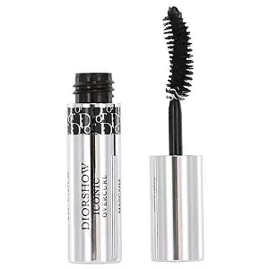

O QUE É? A máscara para cílios Diorshow é formulada com 90%* de ingredientes de origem natural, proporciona volume cílio a cílio, com definição e duração de 24h**, além de acabamento sem transferência. A fórmula da máscara para cílios Diorshow, infundida com extrato de centáurea azul, tem fácil aplicação. A cada camada, a escova XXL de alta precisão concede volume aos cílios para um efeito de mais fios, modulável do mais natural ao mais espetacular. Concebida para diferentes tipos de cílios, concede volume na medida e proporciona alta definição ao olhar. A cada aplicação, os cílios parecem mais fortes e mais bonitos.
Preço R$ 225,00 ou 10x de R$ 22,50.
